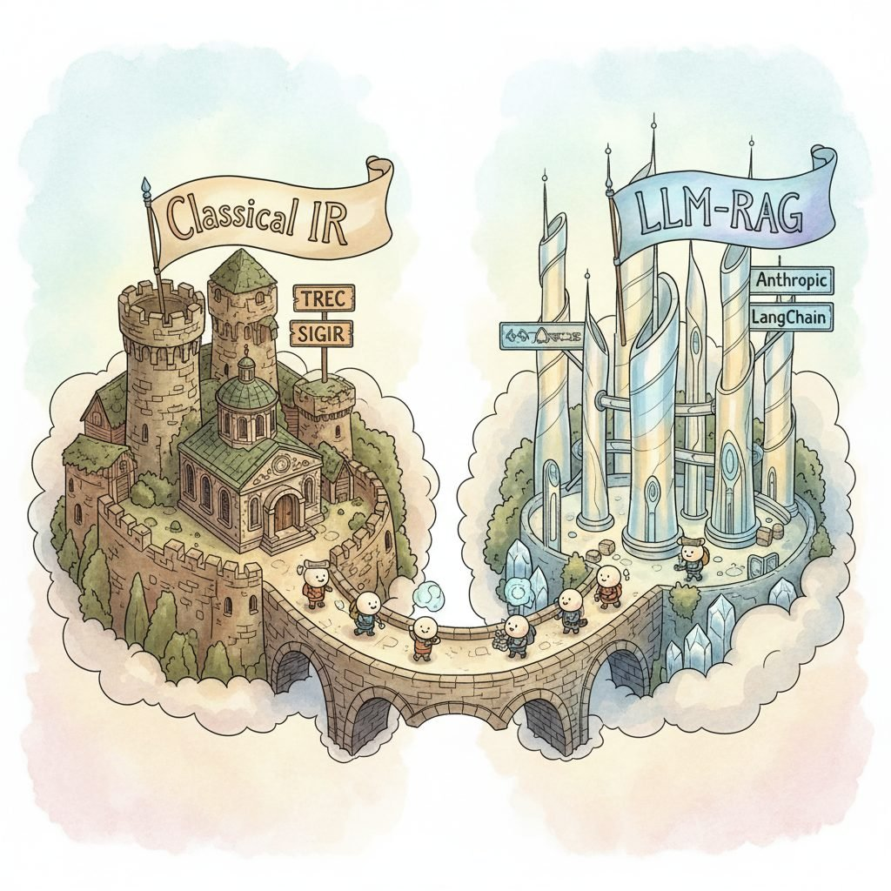

"BM25 is sixty years old, HNSW is from 2018, ColBERT is from 2020; somebody on Discord is shipping all three by Tuesday. Read both literatures or be surprised by both."
Big PictureRetrieval has two literatures that mostly do not talk to each other: the classical IR tradition (SIGIR, ECIR, Manning et al.'s textbook, TREC tracks, BM25, ColBERT, learning-to-rank) and the LLM-RAG tradition (NeurIPS, ICLR, ACL, EMNLP, arXiv, Anthropic and OpenAI engineering blogs, LangChain and LlamaIndex communities). Both are essential for any serious retrieval engineer building LLM agent systems. The 2026 best practice is to read the IR fundamentals for the algorithms that still drive every modern system (BM25 in every hybrid stack, HNSW under every vector DB, the metrics every leaderboard reports) and the LLM-RAG sources for what changed in the last 18 months (contextual retrieval, agentic search, ColPali for document images, FRAMES-style multi-hop benchmarks). This section maps the venues and prioritizes the ones with the best signal-to-noise for the practitioner shipping retrieval into LLM agents.
Prerequisites
This is an end-of-chapter reading list and assumes familiarity with the retrieval modules in Part VII. No new technical prerequisites.
Retrieval moves slower than agent literature but faster than classical IR. The cadence to expect: a foundational algorithm paper every few years (HNSW 2018, DPR 2020, ColBERT 2020, BEIR 2021, SPLADE 2021, RAG 2020, BGE 2023, BGE-M3 2024); a stream of incremental embedder releases monthly; a stream of practitioner blog posts weekly; and active Discord and Reddit threads daily. Allocate reading time across this hierarchy rather than only the top or only the bottom.
Looking Back: What sections 36.1-36.4 coveredSection 36.1 mapped the four-bucket vector-platform landscape (serverless, hosted-search-with-vector, self-hosted, SQL-extension) and anchored the recall-latency-memory trade-off with public ANN-Benchmarks numbers: HNSW ~0.95 recall@10 at ~5K QPS, IVF-Flat ~0.85 at ~12K QPS, IVF-PQ ~0.80 at ~30K QPS at $8\times$ memory savings. Complexity bounds: HNSW $O(M \log N)$ insert / $O(\log N)$ query; IVF-PQ $O(N/n_{\text{list}} \cdot D' + k \cdot D)$. Section 36.2 surveyed the library stack (embedders, rerankers, orchestrators, parsers, hybrid helpers, eval) and crystallized the "thinnest viable" four-library recipe (sentence-transformers + Qdrant OSS + RAGAS + Phoenix) plus the RRF formula $\text{score}(d) = \sum_q 1/(60 + \text{rank}_q(d))$ that fuses lexical and dense lists. Section 36.3 laid out the four-tier benchmark hierarchy (TREC-lineage, BEIR, MTEB, RAG-specific) and the canonical metrics (NDCG, MRR, MAP, Recall@k, BM25). Section 36.4 catalogued the 2026 embedder field (closed-API, open-weight, late-interaction, multimodal), the Matryoshka loss $\mathcal{L}_{\text{MRL}} = \sum_k c_k \mathcal{L}(z_{1:k}, y)$, ColBERT's MaxSim score $s(q,d) = \sum_i \max_j q_i \cdot d_j$, and the InfoNCE objective $\mathcal{L} = -\log \frac{\exp(s(q,d^+)/\tau)}{\sum \exp(s(q,d_i)/\tau)}$ that trains every modern bi-encoder. The four-section arc moves from infrastructure to libraries to evaluation to models — the same order practitioners encounter when standing up a retrieval system.
36.5.1 Foundational textbooks
- Manning, Raghavan, and Schutze, "Introduction to Information Retrieval" (Cambridge, 2008) is the canonical IR textbook and the single most-cited reference in this field, distinguished by free online access and a curriculum that covers indexing, scoring, classification, clustering, and web search end-to-end. Its objective is to be the IR fundamentals every retrieval engineer should have read once, which matters because the algorithms it covers (inverted indexes, BM25, TF-IDF, vector-space scoring, latent semantic indexing) underlie every modern system. Read cover-to-cover once if you have not; reference chapters 6 (term weighting), 8 (evaluation), and 11 (probabilistic IR) for the production-relevant material. Free PDF online; print edition still in print.
- Lin, Nogueira, and Yates, "Pretrained Transformers for Text Ranking: BERT and Beyond" (2021) is the standard reference for the BERT-era transformer-retrieval literature, distinguished by being written by three of the field's most active researchers (Castorini lab at Waterloo). Its objective is to be the bridge between the classical IR textbook and the LLM-RAG present, which matters because the dense-retrieval architectures, the cross-encoder rerankers, and the ColBERT-style late-interaction patterns all derive from the period this book covers. Read after Manning et al. if you want to understand the lineage of every embedder in Section 36.4. Available as Morgan and Claypool monograph and a free draft on arXiv.
- Manning and Schutze, "Foundations of Statistical Natural Language Processing" (MIT Press, 1999) is the older NLP textbook still useful for the statistical-language-model and probability foundations under modern dense retrieval. Read selectively (chapters on language modeling and lexical acquisition) if the modern Stanford NLP CS224N material feels too quick.
- Croft, Metzler, and Strohman, "Search Engines: Information Retrieval in Practice" (Addison-Wesley, 2009) is the systems-oriented complement to Manning et al., distinguished by a focus on indexing pipelines, web-scale crawling, and production search engineering. Read when the implementation side (how an inverted index is actually built, how query routing works at scale) is the gap.
- Jurafsky and Martin, "Speech and Language Processing" (3rd edition draft, ongoing): the canonical NLP textbook, currently in continuously-updated 3rd-edition draft form. The retrieval-relevant chapters are 14 (Question Answering) and the dense-retrieval sections of chapter 11. Free draft at web.stanford.edu/~jurafsky/slp3; chapter 14 is the most up-to-date textbook coverage of modern QA and RAG.
36.5.2 Essential papers and essays
The papers that anyone working on retrieval in 2026 should have read. Sorted by canonicity rather than recency.
- Karpukhin et al., "Dense Passage Retrieval for Open-Domain Question Answering" (DPR, EMNLP 2020): the canonical paper that established dense retrievers as competitive with BM25, with the bi-encoder training recipe still used today.
- Lewis et al., "Retrieval-Augmented Generation for Knowledge-Intensive NLP Tasks" (RAG, NeurIPS 2020): the paper that named the RAG architecture. Required reading.
- Khattab and Zaharia, "ColBERT: Efficient and Effective Passage Search via Contextualized Late Interaction over BERT" (SIGIR 2020): the late-interaction paper that defined a third architectural family beyond bi-encoders and cross-encoders.
- Malkov and Yashunin, "Efficient and robust approximate nearest neighbor search using Hierarchical Navigable Small World graphs" (2018): the HNSW paper. The algorithm under every vector database in Section 36.1.
- Thakur et al., "BEIR: A Heterogeneous Benchmark for Zero-shot Evaluation of Information Retrieval Models" (NeurIPS 2021): the BEIR paper that exposed dense-retriever transfer weakness and motivated hybrid search.
- Muennighoff et al., "MTEB: Massive Text Embedding Benchmark" (EACL 2023): the benchmark behind the canonical embedder leaderboard.
- Chen et al., "BGE M3-Embedding" (2024): the BGE-M3 paper, the open-weight hybrid-retrieval default.
- Faysse et al., "ColPali: Efficient Document Retrieval with Vision Language Models" (2024): the document-image retrieval paper.
- Anthropic, "Introducing Contextual Retrieval" (2024): the practitioner-style essay describing prompt-engineered chunk contextualization (prepend an LLM-generated chunk-specific context line to each chunk before embedding). Short, opinionated, and very influential; required reading for anyone running RAG at production scale.
- Xiong et al., "Approximate Nearest Neighbor Negative Contrastive Learning for Dense Text Retrieval" (ANCE, 2020): the hard-negative-mining recipe that every modern dense-retriever fine-tune uses.
- Asai et al., "Self-RAG: Learning to Retrieve, Generate, and Critique through Self-Reflection" (ICLR 2024): the influential self-reflective RAG paper, defining a recipe for letting the LLM decide when to retrieve.
- Zheng et al., "Step-Back Prompting Enables Reasoning Via Abstraction in Large Language Models" (2023): the canonical query-rewriting prompt that improves retrieval on hard queries; still in use as part of advanced retrieval pipelines.
- Khattab et al., "DSPy: Compiling Declarative Language Model Calls into Self-Improving Pipelines" (ICLR 2024): the DSPy paper, defining the optimizer-driven prompt-program framework that handles retrieval as a Module.
36.5.3 Active blogs and newsletters
- Eugene Yan: the deepest production-quality retrieval and RAG essays online. "RAG / LLM Patterns" and "Building Reliable LLM Applications" are required reading for any production retrieval engineer.
- Anthropic Engineering blog: contextual retrieval, prompt caching for RAG, citations API, and other production-relevant essays directly from the model provider.
- Pinecone Learning Center: vendor-flavored but technically deep tutorials on vector search, hybrid retrieval, and RAG. The "vector-database-101" series is the canonical onboarding material.
- Elastic Search Labs: practitioner-quality essays on hybrid retrieval, learned sparse retrieval (Elastic's ELSER), and production search engineering, with a useful enterprise perspective.
- Qdrant Articles: technical deep-dives on filtered HNSW, quantization tradeoffs, and the engineering behind Qdrant. Useful even if you do not use Qdrant.
- Vespa Blog: arguably the most technically substantial vector-database blog, with essays on multi-phase ranking, structured tensor scoring, and large-scale serving. Read for the ranking-engineering content.
- LangChain blog and LlamaIndex blog: weekly framework updates with RAG case studies. Useful for keeping up with the framework feature surface.
- Simon Willison's RAG tag: daily commentary on the LLM and retrieval landscape, with a strong nose for what is hype and what is real.
- Hamel Husain's blog and Shreya Shankar's writing: production-focused essays on RAG evaluation, error analysis, and the operational side of LLM systems.
- Latent Space: podcast and newsletter, the central venue for the practitioner community. The retrieval and RAG episodes are interviews with the people building the canonical systems.
- The Batch by deeplearning.ai: weekly summary including a retrieval and RAG section worth scanning.
- Maarten Grootendorst's newsletter: well-illustrated technical essays on embeddings, RAG architectures, and clustering.
36.5.4 Academic conferences and venues
- SIGIR (ACM SIGIR Conference on Research and Development in Information Retrieval): the canonical IR conference, annually since 1971. The retrieval and ranking literature lives here.
- ECIR (European Conference on Information Retrieval): the European counterpart, smaller and more focused. Worth attending or reading the proceedings for European-perspective work.
- ACL / EMNLP / NAACL / EACL: NLP conferences where the LLM-RAG and dense-retrieval literature largely appears. EMNLP often has the most retrieval-relevant content; NAACL the most QA-specific.
- NeurIPS, ICLR, ICML: the ML conferences where the embedder-training, retrieval-finetuning, and RAG-evaluation papers appear. BEIR (NeurIPS 2021), MTEB (EACL 2023), DSPy (ICLR 2024), and most modern embedder papers are at these venues.
- TREC (Text REtrieval Conference): NIST's annual evaluation tracks. The TREC-DL track (Deep Learning) is the most-cited modern retrieval evaluation; the TREC-RAG track (started 2024) is the canonical reproducible RAG evaluation.
- KDD (ACM SIGKDD Conference on Knowledge Discovery and Data Mining): adjacent venue with retrieval and recommendation work, often the bridge between IR and applied ML.
- CIKM (ACM Conference on Information and Knowledge Management): retrieval, databases, and applied NLP. Worth scanning the proceedings.
- The Web Conference (formerly WWW): the canonical venue for web search and retrieval; the recent years' tracks have heavy LLM-RAG content.
36.5.5 Leaderboards and live rankings
The live numbers worth watching. Re-checking these monthly is the cheapest way to track field movement.
- MTEB Leaderboard: the canonical embedder ranking, updated continuously. Filter by retrieval tasks when picking a retriever. Cross-reference with the model's HF page for license and dimension count.
- MMTEB Multilingual Leaderboard: the multilingual extension. Different top-10 than English; critical for non-English corpora.
- ANN-Benchmarks: nearest-neighbor algorithm benchmarks (recall vs throughput tradeoffs). Useful for picking an index type within a vector DB.
- Vectara Hallucination Leaderboard: hallucination-rate measurements for LLMs in RAG settings. Useful for picking the generator part of the stack.
- BEIR scores on Hugging Face model cards: every reputable open embedder reports its BEIR average; cross-reference against MTEB for cross-domain robustness.
- RAGBench and FRAMES leaderboards (via the paper repositories): end-to-end RAG numbers updated less frequently but more rigorous than vibe-based comparisons.
36.5.6 Communities: Discord, Slack, Reddit, forums
The retrieval communities are smaller and more technical than the general LLM communities. The active venues:
- r/Rag: the retrieval-augmented-generation subreddit. Practitioner questions, model comparisons, and tooling discussions. The signal-to-noise is higher than r/LocalLLaMA on retrieval-specific topics.
- r/LocalLLaMA: the open-weights LLM community. RAG comes up frequently; the hardware-and-self-hosting threads are useful for deployment-related questions.
- r/MachineLearning: the canonical ML subreddit. Retrieval and RAG papers get discussed here when they break out of the IR community.
- LangChain Discord: linked from langchain.com. The framework's user community; useful for framework-specific questions.
- LlamaIndex Discord: linked from llamaindex.ai. RAG-focused community with active developer participation.
- Pinecone Community: linked from pinecone.io. Vector-database-specific questions; useful even for non-Pinecone users for general retrieval discussions.
- Weaviate Community Slack: linked from weaviate.io. Hybrid-retrieval-heavy discussions, useful for the lexical-plus-dense tuning questions.
- Qdrant Discord: linked from qdrant.tech. Smaller but highly technical, with Qdrant engineers active in the channels.
- Hugging Face Discord: large general community with #embeddings, #retrieval, and model-specific channels. Useful for HF-hosted model questions.
- Anthropic Discord: the contextual-retrieval, prompt-caching, and Citations API discussions are the retrieval-relevant channels.
- OpenAI Developer Forum: linked from platform.openai.com. Useful for OpenAI embedding and assistants-API questions.
36.5.7 Comparing the venues
Table 36.5.1: Where to go for what (retrieval, 2026).
Venue Use case Latency arXiv cs.IR / cs.CL Primary research Days SIGIR / ECIR proceedings Peer-reviewed IR research Yearly EMNLP / ACL / NeurIPS / ICLR LLM-RAG research Yearly Eugene Yan, Anthropic Engineering Production-quality essays Monthly Pinecone / Vespa / Qdrant blogs Vendor-flavored deep dives Weekly LangChain / LlamaIndex blogs Framework updates Weekly Latent Space Practitioner interviews Weekly Simon Willison Daily commentary Daily r/Rag, r/LocalLLaMA Real-world failure modes Hours Discords (LC, LI, Pinecone, etc.) Tooling Q&A, debugging Minutes MTEB / MMTEB leaderboards Current best embedder Continuous 36.5.8 Courses and tutorials
- Stanford CS276 / CS224U Information Retrieval and Web Search: the canonical academic IR course. Lecture videos and slides are publicly available; the curriculum covers BM25, dense retrieval, ColBERT, learning to rank, and evaluation.
- Stanford CS224N Natural Language Processing with Deep Learning: the canonical NLP course, with retrieval and QA modules. Lecture videos and assignments online.
- Hugging Face Cookbook (retrieval section): hands-on tutorials for embeddings, RAG, and reranking. The free path to first working RAG.
- OpenAI Cookbook (retrieval and embeddings notebooks): production-style notebooks covering hybrid retrieval, chunking strategies, and evaluation. Vendor-flavored but the techniques transfer.
- DeepLearning.AI Short Courses: free 1-3 hour courses on RAG, advanced retrieval, evaluation, and LangChain or LlamaIndex specifically. Co-taught with the framework authors.
- Pinecone's RAG series: vendor-flavored but technically deep tutorial sequence covering chunking, retrieval, reranking, and evaluation.
- Nir Diamant's RAG_Techniques repository: a community-maintained GitHub of every common and uncommon RAG technique, each with runnable notebooks. The fastest way to compare techniques on a small corpus.
Library Shortcut: pagefind for static-site search without a backendIf the takeaway from this chapter is "add search to my docs site", you do not need a vector DB at all.
pagefind(CloudCannon, 2023+) indexes a built static site (Hugo, Jekyll, Astro, Docusaurus, MkDocs, or hand-written HTML) into a sharded WASM index that the browser fetches lazily; queries run client-side with no server, no API key, and no monthly cost. It is the search engine this very book uses (the search box at the top of every section). Add it after your static build; deployment is a folder copy.Show code
# Pagefind ships as an npx-runnable Rust binary, no Node setup required # 1. Build your static site into ./public (any SSG works) # 2. Index it: # npx pagefind --site public # 3. Drop the snippet into your template: # <link rel="stylesheet" href="/pagefind/pagefind-ui.css"> # <script src="/pagefind/pagefind-ui.js"></script> # <div id="search"></div> # <script>new PagefindUI({ element: "#search" });</script>Code Fragment 36.5.1: Adddata-pagefind-meta="chapter"attributes to elements you want to surface as filterable facets; the index grows by roughly 5-10% of the indexed HTML size.36.5.9 Staying current: a weekly cadence
A defensible weekly reading plan for a retrieval practitioner:
- Daily (5 minutes): scan r/Rag and r/LocalLLaMA for the day's threads.
- Weekly (60 minutes): read the latest Latent Space episode summary, one Eugene Yan or Anthropic Engineering essay, and one of Simon Willison's weekly roundups.
- Bi-weekly (30 minutes): re-check the MTEB leaderboard top-10 for new embedder releases; check the latest LangChain and LlamaIndex blog posts for framework feature changes.
- Monthly (2 hours): read one ACL / EMNLP / NeurIPS / ICLR retrieval paper and one SIGIR / ECIR paper from the latest accepted proceedings. Tag them in your reading log with one-sentence summaries.
- Quarterly (half a day): re-run your in-domain eval set against the current top-3 embedders on MTEB and the current top-2 rerankers. Update the production stack if a new model beats the incumbent by more than 2 NDCG points on your data.
This cadence keeps you within two weeks of the field's frontier without burning weekends. The discipline matters more than the volume: a retrieval engineer who reads 30 minutes a week consistently is better-calibrated than one who binges papers irregularly.
Key Insight: The two literatures complement, do not replace each otherThe classical IR literature (Manning, SIGIR, BM25, learning-to-rank, ColBERT) and the LLM-RAG literature (Anthropic, OpenAI, LangChain, LlamaIndex, NeurIPS, ACL) are written by mostly disjoint communities and use mostly disjoint vocabularies. A practitioner who reads only one half overestimates what is new in the other half: the LLM-RAG-only reader rediscovers TF-IDF and ColBERT three years late; the IR-only reader misses contextual retrieval, agentic search, and the practical lessons of the 2023-25 RAG era. The right calibration is to read both, treat both as authoritative on their respective questions, and route a given problem to the literature that owns it. Algorithm? IR side. Prompt design and pipeline composition? LLM-RAG side. Evaluation? Both, with the IR side owning the metrics and the LLM-RAG side owning the reference-free synthetic-eval techniques.
36.5.10 Podcasts, YouTube channels, and video content
- Latent Space (podcast): weekly interviews with practitioners building production LLM and RAG systems. The RAG-specific episodes (LlamaIndex's Jerry Liu, LangChain's Harrison Chase, Anthropic's Alex Albert on contextual retrieval) are required listening.
- Umar Jamil's YouTube channel: deep multi-hour explanations of papers including DPR, RAG, BGE, and ColBERT, with code walkthroughs. The single best free video resource for understanding modern retrieval architectures from first principles.
- Andrej Karpathy's YouTube: not retrieval-specific but the LLM-from-scratch and tokenizer videos are the canonical foundation for understanding what an embedder is doing.
- AI Engineer Foundation YouTube: recordings from the AI Engineer Summit and World's Fair conferences with strong RAG and retrieval engineering content from the practitioner community.
- Stanford Online (CS224N, CS324, CS236): the Stanford NLP and LLM course lectures, free on YouTube. Required background for the modeling side of retrieval.
- Weaviate Podcast: vendor-flavored but technically substantial conversations with retrieval researchers and practitioners. The interviews with Connor Shorten on hybrid search architectures are particularly useful.
- Two Minute Papers: short summaries of recent papers, useful for triage; the retrieval coverage is thinner than the generative coverage but appears regularly.
36.5.11 Meetups, summits, and workshops
Beyond the academic conferences, the practitioner gatherings worth attending:
- AI Engineer Summit / World's Fair (annually since 2023): the largest practitioner-oriented conference in the LLM and retrieval space, with a substantial RAG track. Talks are posted to YouTube within weeks.
- Data + AI Summit (Databricks, annually): retrieval and RAG talks from the data-platform perspective. Heavy on the lakehouse and Spark integration angles.
- AWS re:Invent, Google Cloud Next, Microsoft Ignite: cloud-vendor conferences with retrieval and RAG tracks; useful for understanding the cloud-specific platforms.
- OpenAI DevDay, Anthropic Build Summit, Cohere Summit: model-provider conferences with retrieval-relevant sessions. Smaller but typically the venue for major product launches.
- Local AI / RAG meetups: large cities (SF, NYC, London, Berlin, Singapore, Bangalore) have monthly AI-engineering meetups; the retrieval and RAG content is often the most consistent track. Find via Meetup.com or AI Engineer Foundation chapter listings.
- Kaggle competitions: occasional retrieval-themed competitions (the LMSYS Chatbot Arena Conversations, the 2024 NeurIPS RAG competition, ad-hoc IR challenges). Useful for both learning and recruiting.
36.5.12 The canonical resources by question
A practitioner's quick-reference of "where do I go when I have question X":
- "What is BM25 actually doing?": Manning et al. (2008) chapter 11; Croft et al. (2009) chapter 7.
- "How does HNSW work?": Malkov and Yashunin (2018); Pinecone's HNSW blog post; Qdrant's blog post on filterable HNSW.
- "Which embedder is best on my data?": shortlist top-10 on the relevant MTEB subset, evaluate on your own held-out set with RAGAS or ranx.
- "Why is my retrieval bad?": usually one of (a) missing query prompt for the embedder, (b) skipped L2 normalization, (c) bad chunking, (d) BM25 should be in the pipeline. Eugene Yan's "RAG Patterns" post is the canonical debugging guide.
- "Should I use a reranker?": almost always yes; the BGE Reranker v2-m3 or Cohere Rerank are the canonical first picks.
- "How do I evaluate a RAG pipeline?": RAGAS for reference-free; a labeled in-domain set with NDCG and EM for absolute quality; Vectara's leaderboard for hallucination rates.
- "How do I deal with PDFs with tables?": Unstructured.io for breadth; LlamaParse or Docling for table-aware extraction; ColPali for retrieving from the page images directly.
- "How do I make retrieval multilingual?": BGE-M3, Cohere Embed multilingual, or multilingual-E5; benchmark on MIRACL.
- "How do I fine-tune an embedder?": sentence-transformers 3.x trainer plus hard-negative mining via the in-progress model; the FlagEmbedding training code is the canonical example.
- "How do I scale to a billion vectors?": Milvus, Vespa, or Pinecone Serverless; for cost-bounded scale, IVF-PQ with reranking; for performance-bounded scale, HNSW with binary quantization.
What's Next: Chapter 37 — Conversational AI FoundationsContinue to Section 37.1: Dialogue System Architecture.
Chapter 36 closes Part VII (Retrieval and Information Extraction). Part VIII turns from "find the right context" to "use the context in a conversation", and Chapter 37 opens that arc with the foundations of dialogue systems: turn-taking, dialog state, mixed-initiative interaction, and the architectural split between the LLM that generates utterances and the policy layer that decides what to do next. The retrieval stack we just built becomes one tool in a larger conversational agent: the embedder we picked in Section 36.4 will encode user turns for memory retrieval; the hybrid BM25-plus-dense recipe from Section 36.2 will index the assistant's tool-output history; the RAGAS faithfulness metric from Section 36.3 will measure whether a multi-turn answer remains grounded across follow-ups. Section 37.1 starts with the canonical dialogue-system architecture (ASR → NLU → DM → NLG → TTS in the classical era, collapsed to a single LLM-plus-policy in 2026) and traces the lineage from POMDP-based dialogue managers to the structured-output command generation that drives modern assistants like Claude, ChatGPT, and Gemini Live.
Lexica, Cross-Citation-Tracking AI Agent
